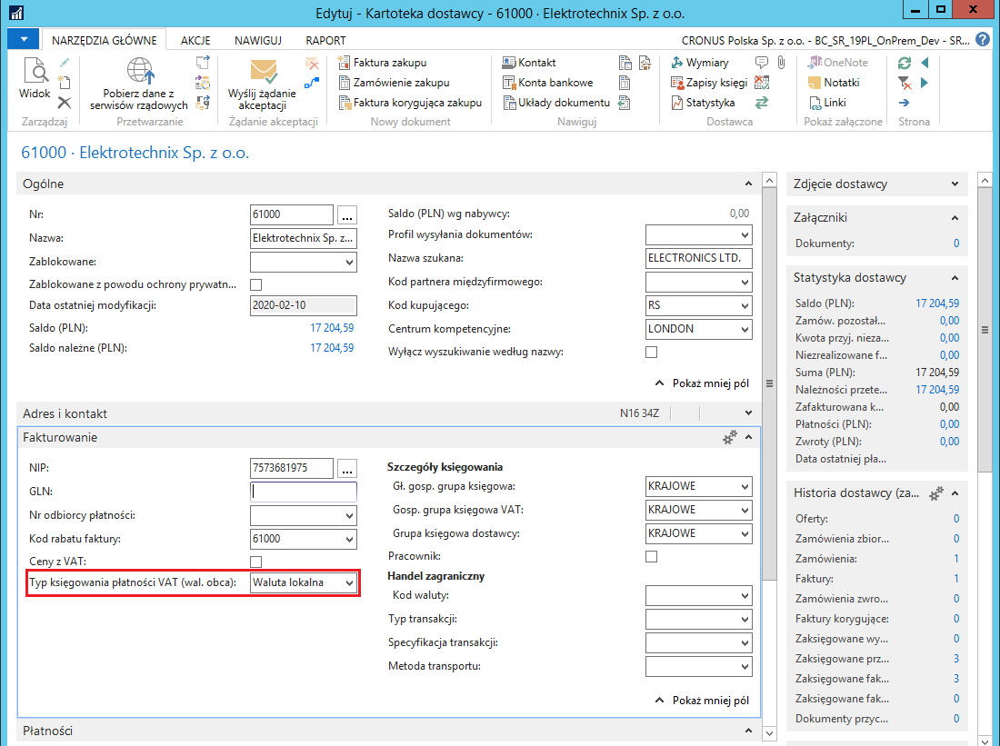
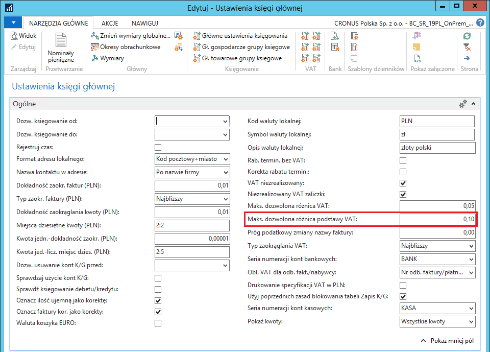
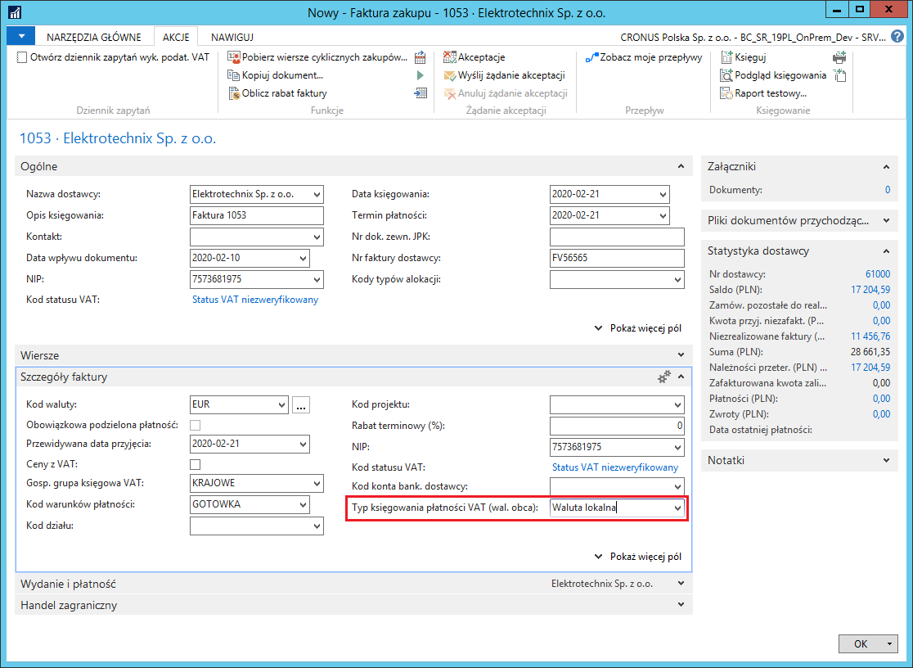
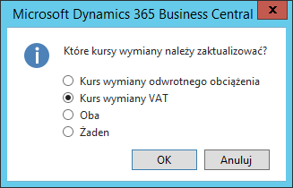
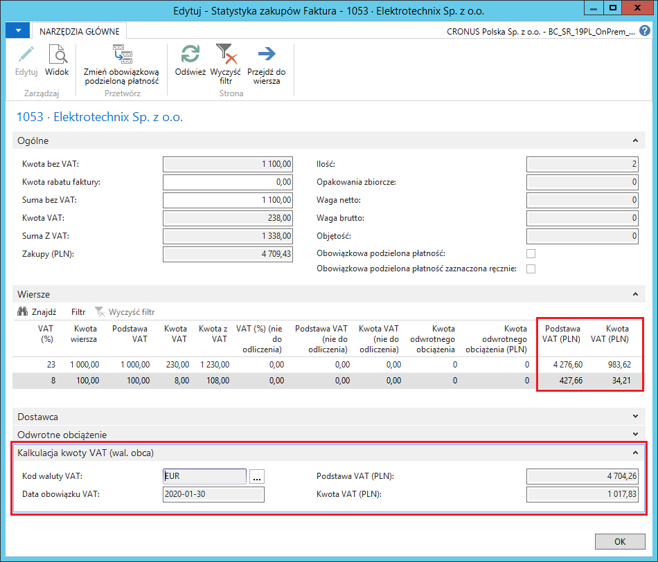
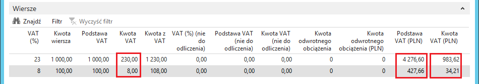
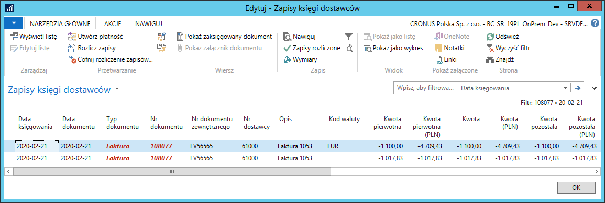
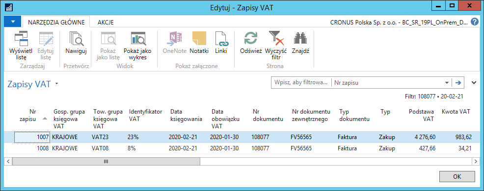
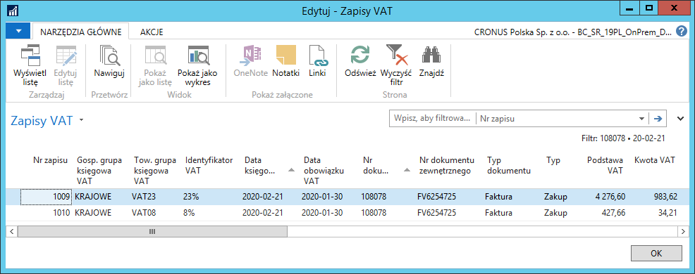

Dodatkowy kurs wymiany waluty do przeliczenia VAT
Informacje ogólne
Podczas księgowania faktur zakupu z naliczonym VAT od dostawców krajowych, wystawionych w obcej walucie, jak również w przypadku wystawiania faktur sprzedaży w obcej walucie z VAT dla nabywców krajowych, w niektórych sytuacjach konieczne jest zastosowanie innego kursu wymiany waluty do przeliczenia podstawy i kwoty VAT, niż do przeliczenia wartości kosztów/przychodów i zobowiązania/należności. W Polskiej Lokalizacji systemu Microsoft Dynamics 365 Business Central on-premises zostało dodane narzędzie umożliwiające podanie dwóch różnych kursów wymiany waluty w dokumentach zakupu i dokumentach sprzedaży. W wyniku działania tej funkcji, powstają dwa zapisy księgi dostawcy/nabywcy, w podziale na kwotę VAT i pozostałą część zobowiązania/należności.
Dodatkowy zapis księgi dostawcy/nabywcy z kwotą VAT może być utworzony:
w walucie lokalnej
w walucie obcej
Uwaga
Opis ustawień i obsługi dodatkowego kursu wymiany waluty do przeliczenia VAT zamieszczony w dalszej części rozdziału bazuje na przykładzie faktury zakupu. W dokumentach sprzedaży mechanizm jest identyczny, więc należy wzorować się na opisie dotyczącym zakupu.
Ustawienia
Sposób tworzenia zapisów księgi dostawcy dla zobowiązań w zakresie kwoty VAT księgowanej z dokumentu zakupu określany jest indywidualnie dla każdego dokumentu. Może być też ustawiony jako domyślny dla dostawcy, w tym celu należy wykonać następujące kroki:
Należy wybrać Działy > Zarządzanie Finansami > Zobowiązania > Dostawcy.
W oknie Dostawcy, które się otworzy, należy zaznaczyć wiersz z wybranym dostawcą i kliknąć na wstążce Edytuj.
W kartotece dostawcy, która się otworzy, na karcie skróconej Fakturowanie, z listy rozwijanej w polu Typ księgowania płatności VAT (wal. obca) należy wybrać właściwą opcję spośród dostępnych:
pusta – opcja domyślna – zapis zobowiązania będzie jeden, nie będzie księgowany dodatkowy zapis księgi dostawców dla kwoty VAT; w tej sytuacji nie będzie możliwości podania innego kursu wymiany waluty do przeliczenia VAT,
Waluta lokalna – dla dokumentów zakupu w walucie obcej dodatkowy zapis księgi dostawców dla kwoty VAT zostanie zaksięgowany w walucie lokalnej,
Waluta obca – dla dokumentów zakupu w walucie obcej dodatkowy zapis księgi dostawców dla kwoty VAT zostanie zaksięgowany w walucie dokumentu.
Wybrana opcja będzie domyślnie wstawiana w analogicznym polu w księgowanych dokumentach zakupu od tego dostawcy.

Kwota podstawy VAT skalkulowana przez system na podstawie dodatkowego kursu wymiany może wymagać ręcznej zmiany przez użytkownika. Aby było to możliwe, należy zdefiniować właściwe ustawienia. W tym celu należy wykonać następujące kroki:
Należy wybrać Działy > Zarządzanie Finansami > Administracja > Ustawienia księgi głównej.
W oknie Ustawienia księgi głównej, które się otworzy, na karcie skróconej Ogólne, w polu Maks. dozwolona różnica podstawy VAT wprowadź dopuszczalną wartość, o jaką można ręcznie zmienić skalkulowaną kwotę podstawy VAT w walucie lokalnej w księgowanym dokumencie.

Obsługa
Wprowadzając fakturę zakupu w obcej walucie od wybranego dostawcy, system stosuje domyślne ustawienia, a w oknie Statystyka można zweryfikować i, w razie potrzeby, zmienić skalkulowane przez system wartości. W tym celu należy wykonać następujące kroki:
Należy wybrać Działy > Zarządzanie Finansami > Zobowiązania > Faktury zakupu.
W oknie Faktury zakupu, które się otworzy, należy kliknąć na wstążce Nowy.
Z listy rozwijanej w polu Nr dostawcy należy wybrać właściwego dostawcę. Pozostałe pola należy wypełnić w standardowy sposób.
Pole Typ księgowania płatności VAT (wal. obca) przyjęło domyślną opcję z kartoteki wybranego dostawcy.

Kurs wymiany waluty do przeliczenia VAT pobierany jest z okna Kursy wymiany walut według Daty obowiązku VAT wprowadzonej w fakturze zakupu. Zmiana Daty obowiązku VAT wywołuje komunikat, w którym należy zaznaczyć wybraną opcję i kliknąć OK. Dostępne opcje:
Kurs wymiany odwrotnego obciążenia – wybór tej opcji spowoduje uaktualnienie kursu wymiany waluty do przeliczenia odwrotnego obciążenia,
Kurs wymiany VAT – wybór tej opcji spowoduje uaktualnienie kursu wymiany waluty do przeliczenia VAT,
Oba – wybór tej opcji spowoduje uaktualnienie obydwu kursów wymiany waluty: do przeliczenia odwrotnego obciążenia i do przeliczenia kwoty VAT,
Żaden – wybór tej opcji spowoduje, że żaden z kursów wymiany waluty nie zostanie uaktualniony: ani do przeliczenia odwrotnego obciążenia, ani do przeliczenia kwoty VAT.

Na wstążce należy kliknąć przycisk Statystyka (można też nacisnąć klawisz F7).
W oknie Statystyka zakupów, które się otworzy, na karcie skróconej Kalkulacja kwoty VAT (wal. obca) prezentowane są informacje dotyczące przeliczenia kwoty VAT dokumentu:
Kod waluty VAT – w tym polu prezentowana jest waluta, w jakiej księgowany jest dokument zakupu; można kliknąć przycisk asysty, aby w oknie Zmiana kursu wymiany sprawdzić i ewentualnie ręcznie zmienić kurs wymiany waluty zastosowany do przeliczenia kwoty VAT z dokumentu,
Data obowiązku VAT – w tym polu prezentowana jest data obowiązku VAT przypisana do dokumentu,
Podstawa VAT (PLN) – w tym polu prezentowana jest kwota podstawy VAT z dokumentu po przeliczeniu na PLN według podanego kursu wymiany waluty do przeliczenia VAT,
Kwota VAT (PLN) – w tym polu prezentowana jest kwota VAT z dokumentu po przeliczeniu na PLN według podanego kursu wymiany waluty do przeliczenia VAT.
Na karcie skróconej Wiersze prezentowane są informacje dotyczące przeliczenia kwoty VAT dokumentu według stawek VAT zastosowanych w dokumencie. 
Na karcie skróconej Wiersze w oknie Statystyka zakupów można ręcznie zmienić niektóre wartości wyliczone przez system, w granicach maksymalnych dozwolonych różnic:
dla waluty lokalnej – zdefiniowanych w oknie Ustawienia księgi głównej;
dla waluty obcej – zdefiniowanych w kartotece wybranej waluty.

Po weryfikacji i ewentualnym poprawieniu skalkulowanych wartości należy kliknąć OK, aby zamknąć okno Statystyka zakupów.
W oknie Faktura zakupu, na wstążce, należy kliknąć Księguj (można nacisnąć klawisz F9), aby zaksięgować fakturę zakupu.
W wyniku zaksięgowania dokumentu zakupu tworzone są m.in. zapisy księgi dostawców i zapisy VAT. Sposób ich utworzenia zależy od opcji wybranej w polu Typ księgowania płatności VAT (wal. obca) w księgowanym dokumencie:
Waluta lokalna:
Zapisy księgi dostawców – tworzone są dwa zapisy:
w kwocie netto w walucie zaksięgowanego dokumentu
w kwocie VAT w walucie lokalnej, wynikającej z przeliczenia według kursu wymiany waluty dla VAT
Zapisy VAT – tworzony jest jeden zapis dla każdej towarowej grupy księgowej VAT zastosowanej w dokumencie, w którym wartość podstawy VAT oraz kwoty VAT wynika z przeliczenia według kursu wymiany waluty dla VAT.


Waluta obca:
Zapisy księgi dostawców – tworzone są dwa zapisy:
w kwocie netto w walucie zaksięgowanego dokumentu
w kwocie VAT w walucie zaksięgowanego dokumentu
Zapisy VAT – tworzony jest jeden zapis dla każdej towarowej grupy księgowej VAT zastosowanej w dokumencie, w którym wartość podstawy VAT oraz kwoty VAT wynika z przeliczenia według kursu wymiany waluty dla VAT.
